Expanding the capabilities
of the Atomic Force Microscope
by Rory Gooderick
 LINKEDIN PROFILE
LINKEDIN PROFILEWhat is an Atomic
Force Microscope?
- It has a resolution of one billionth of a metre – 100,000 times thinner than a strand of hair.
- It ‘feels’ the surface of a material to produce an image.
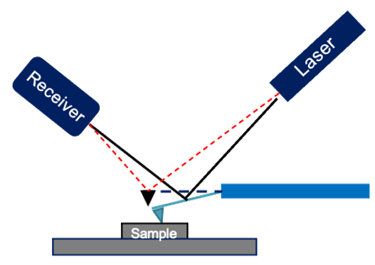
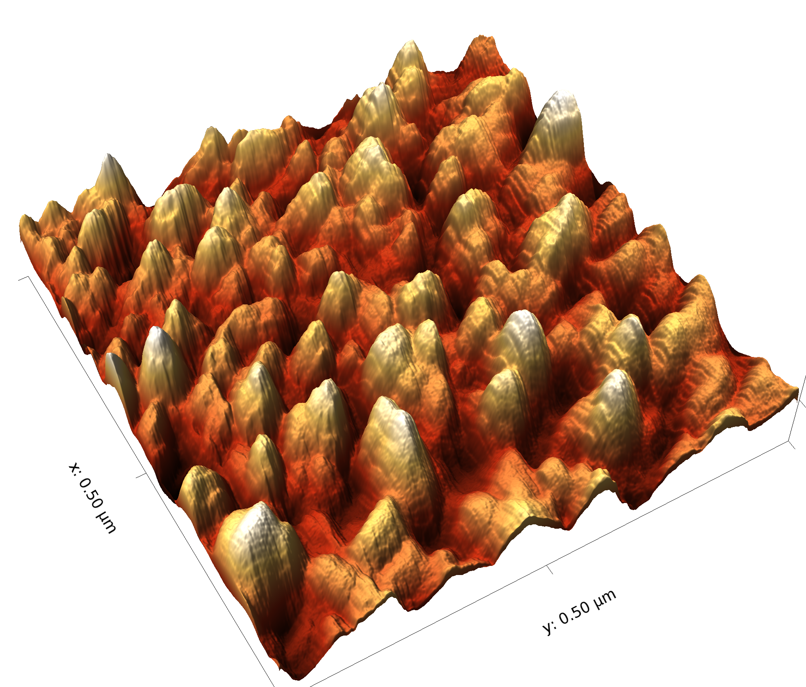
What problems was I
trying to solve?
- We could not image samples sensitive to atmospheric corrosion.
- As we couldn’t control humidity, we could not carry out nanolithography.
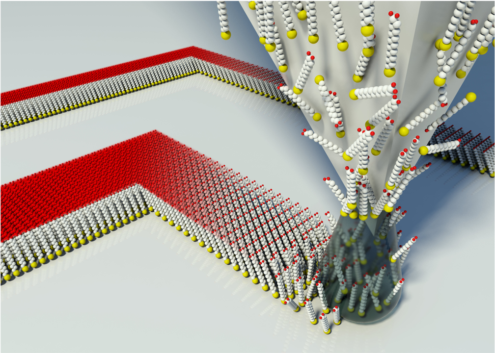
Project part 1:
Metal enclosure
- Enclosure houses the microscope
- It was designed using a 3D CAD software.
- Vacuum pump and humidity controller could be attached.
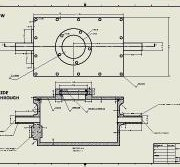
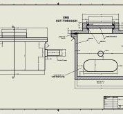
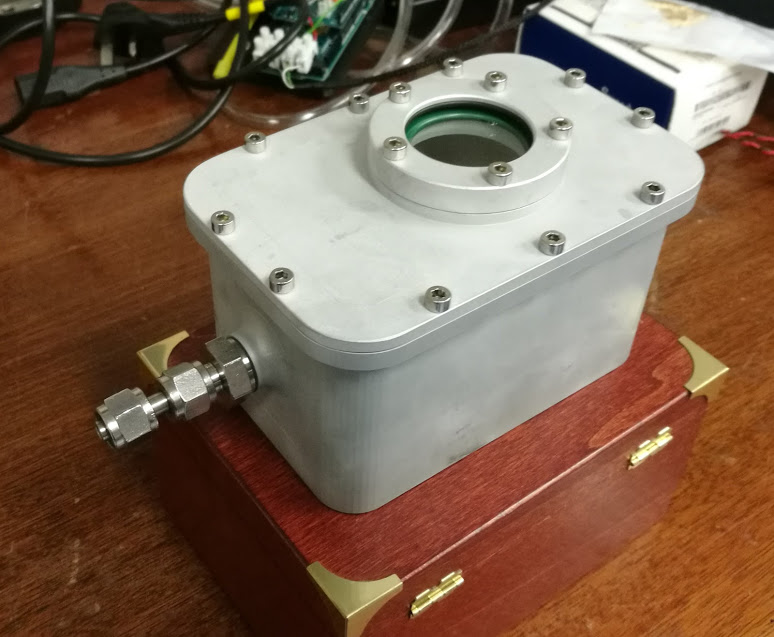
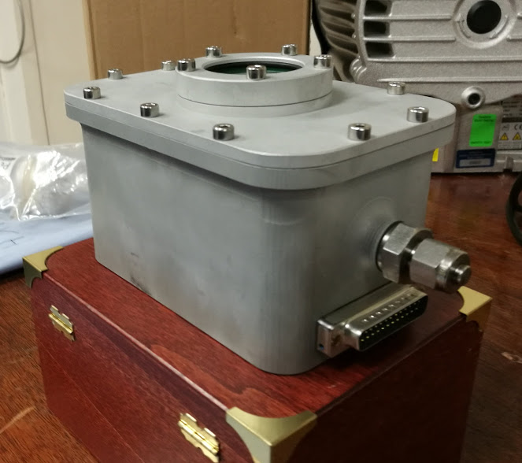
Project part 2:
Environmental Control
- Humidity accurate to 2% over the course two hours.
- A feedback control loop was programmed on an Arduino board to regulate dry air into the enclosure.
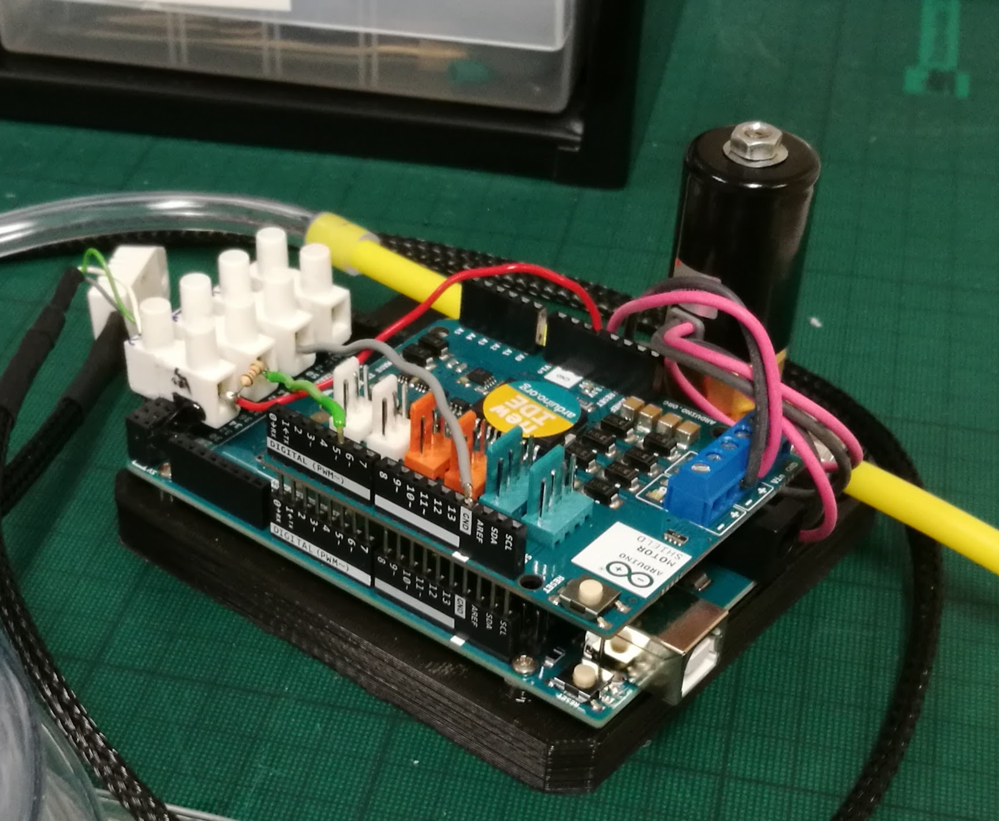
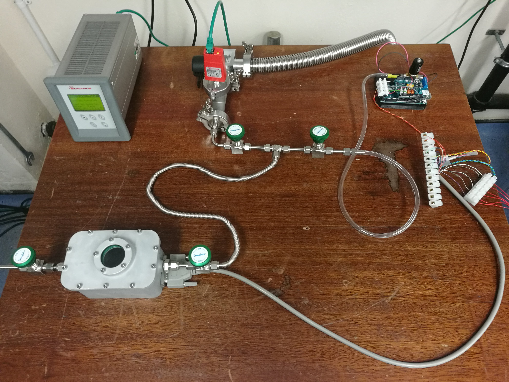
What obstacles
did I face?
- The microscope’s tip was too low down to focus the laser on.
- I designed and 3D printed a part to raise the tip up to within the focal range.
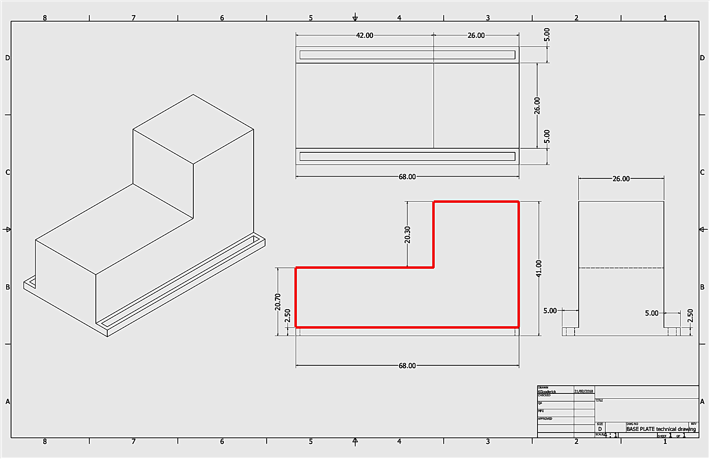
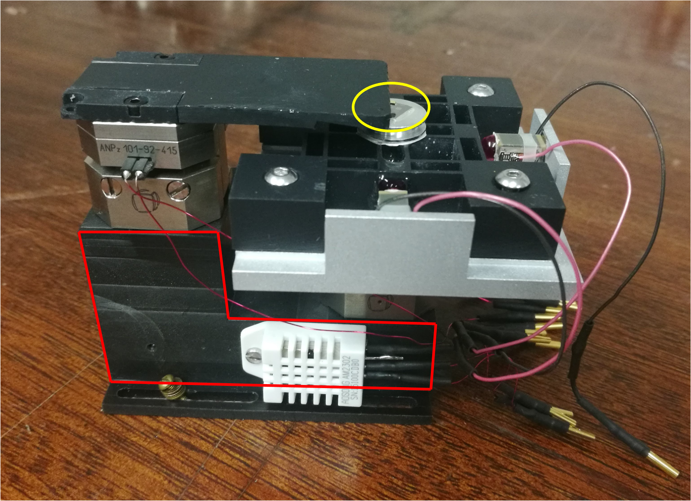
What would I do
differently?
- Implement a requirements capture.
- This would make sure the project runs as smoothly as possible.
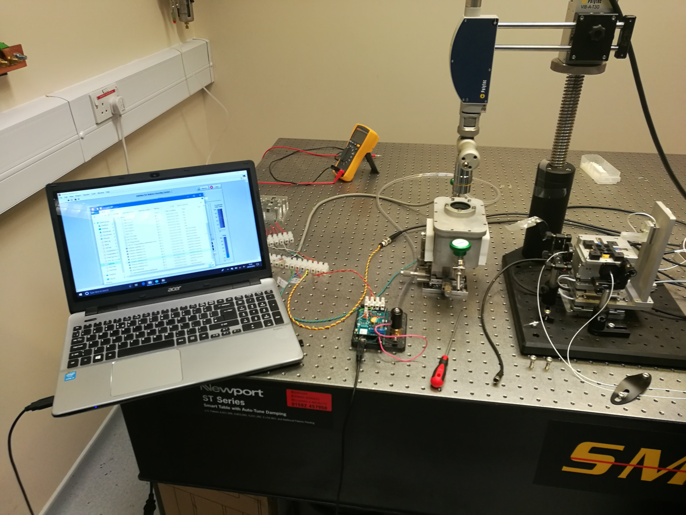